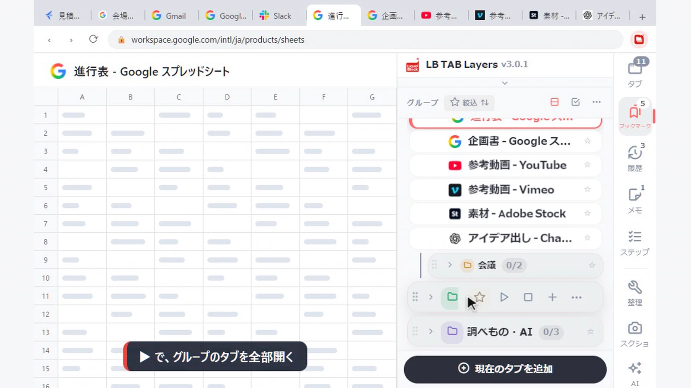

映像制作の値段は、どのセクション（工程）に、どれだけの人が関わるかで決まります。見積が想定より高いと思ったら、まず「この予算で、何ができますか」と聞くのがいちばん早道です。ただし、その前に、目的や使う場所などの押さえておきたいことを揃えておく必要があります。大まかな発注は、大まかな内容の費用になるからです。おすすめは、発注する側と作る側が参考になりそうな動画を出し合う打合せを、最初に1回設けることです。
💡 参考の動画の「ここ」を、時間つきで残す。 YouTube などの動画を止めて、書いて、Enter。「この場面のテンポ」「この文字の出し方」が再生位置つきで残り、チャットや PDF で相手に渡せます。アカウント登録なし。 LB TAB Layers を Chrome に無料で追加 →
「映像制作の値段は分かりにくい」と、よく言われます。見積を見て「思っていたより高い」と感じたことがある方も多いと思います。この記事では、映像を作る側の会社として、値段がどう決まるのか、想定とのずれを小さくするにはどうすればいいのかをまとめます。
結論：値段は「どのセクションに、何人が関わるか」で決まる
撮影が高い、とよく言われます。でも、撮影という作業そのものに値段が付いているわけではありません。どのセクションで、どれだけの人が関わったかで値段が決まります。
たとえば撮影のある映像なら、ディレクター、カメラマン、照明、スタイリスト、出演者、撮影スタジオ、編集、CG制作と、たくさんの人とセクションが関わります（くわしくは「映像制作1年目は「全体の流れ」と「現場の言葉」から」）。見積が高いと感じたら、どのセクションに、何人が関わる見積なのかを見てください。高い理由が見えてきます。
| セクション | 関わる人の例 |
|---|---|
| 企画・コンテ | ディレクター |
| 撮影 | カメラマン・照明・スタイリスト・出演者・撮影スタジオ |
| 編集 | 編集マン |
| CG・合成 | CG制作 |
撮影をやめる、出演者を減らす、CG を使わない。セクションや人が減れば、値段も下がります。逆に言えば、何を作るかが決まらないと、何人が必要かも決まりません。
大まかな発注は、大まかな内容の費用になる
「会社の紹介動画を、1本」。このくらいの大まかな発注だと、見積も大まかな内容の費用になります。作る側は、どんな映像になるか分からないまま、関わりそうな人を見込んで見積を出すしかないからです。
車で言えば、スポーツカーがほしいのか、ワゴンがほしいのかも決まっていないのに、値段の話が始まっている状態です。欲しいものが決まる前に金額の話をすると、どうしても、お互いの思っていた金額にずれが出ます。
ただ、これは発注する方のせいではありません。映像は、作る前にイメージするのが難しいものです。イメージできないと、発注の質はどうしても下がってしまいます。だからこそ、イメージを揃える手順が必要です。
うどん屋に、ケーキを頼まないために
内容を決めずに話を進めるのは、飲食店に行くことだけ決まっていて、何を食べたいかも決めずにお店に入るようなものです。
しかも、起こりがちなのは、こんなことです。入ったのはうどん屋なのに、そこでケーキの話をしてしまう。店主は「確かに同じ小麦だけど、そもそも調理の方法が違うんだよな。うちはうどん屋なんだけどな」と思いながらも、注文を受けてしまう。そうしてできあがるのが、「うどん屋のケーキ」です。
映像にも、得意な表現やつくり方の違いがあります。実写が得意な会社、CG が得意な会社、モーショングラフィックスが得意な会社。何を作りたいかを先に揃えれば、頼む相手も、関わる人も、値段も決まっていきます。
予算があるなら「この予算で、何ができますか」と聞く
予算が決まっているなら、その予算でできることを聞くのがいちばん早いです。作る側は、その予算の中で、どのセクションにどれだけの人を置けるかを考えて提案できます。
ただし、それより先に、押さえておきたいことを前提として置いておいてもらう必要があります。
- 何のための映像か（だれに見せて、何をしてほしいか）
- どこで使うか、長さ（尺）はどのくらいか
- 最終的に決める人はだれか
- 納期と、確認の回数
前提が揃っていれば、「この予算なら、撮影はせずに、手持ちの写真とモーショングラフィックスで」のように、具体的な提案ができます。依頼のときに揃えたいことは「映像制作を発注するときのコツ」にもまとめています。
【実体験】「当たり前」のズレを忘れて、揉めかけたこと
私たちにも、見積で揉めかけたことがあります。制作サイドの当たり前と、発注サイドの当たり前には、ズレがあります。それを忘れて進行してしまうと、揉めてしまいます。
この企画なら、ナレーターなしでできると踏んでいました。ところが後から、ナレーションが要るという話になりました。だからこそ、最初に揃えておくことが大事です。
最初に「参考の動画を出し合う打合せ」を
いちばんのおすすめは、発注する側と作る側が、参考になりそうな動画を出し合う打合せを、一度設けてから話を進めることです。
言葉で「おしゃれな感じ」「テンポよく」と言っても、思い浮かべている映像は人によって違います。参考の動画があれば、それをもとに話を聞けるので、イメージのずれが一気に小さくなります。発注する側に参考の動画があれば、それを持ってきてもらうだけでも十分です。作る側からも、近いと思う動画を出します。
出し合うときは、その動画のどこが参考なのか（色味、テンポ、文字の出し方、出演者の雰囲気など）まで話せると、さらに早く揃います。「この動画の、この場面の、この感じ」が揃えば、必要なセクションと人数が決まり、見積の根拠もはっきりします。
映像制作は、家を建てるのと同じ。修正は「どこまで戻るか」で値段が変わる
もう1つ、見積が増える理由があります。修正です。
映像制作は、家を作るのと同じです。まず土地があります。その土地に建てられるルールがあり、建蔽率に合わせて基礎を作ります。そこに床を張って、柱を建てる。壁を終えてから屋根、と積み上がっていき、設備を入れて、内装を入れて、やっと家になります。そして家具を用意して、住むことになります。
映像も、企画、撮影、編集、CG、仕上げと、前の工程の上に次の工程が積み上がっていきます。だから、いまの段階で「壁」の話が出れば、それは壁の工程まで戻ってやり直すということです。内装を入れている最中に壁を変えたいと言えば、壁から先は全部やり直しになります。修正がどこまで戻るかで、費用が変わります。
たとえば「夜のシーン」を「昼」に変えると
夜のシーンという設定で作っていた映像を、昼に変えたいという修正があったとします。言葉にすれば一言ですが、作る側にとっては大きな手戻りです。
夜だから使えていた光を生かした表現が、昼になると見えなくなります。街の明かり、光の筋、暗い中で浮かび上がる文字。その表現の土台が、なくなってしまうのです。そうなると、別の方法を一から考えなければいけません。家で言えば、基礎に近いところまで戻る修正です。
修正の前に「どこまでなら直せるか」を聞く
どこまで戻る修正なのかを分からずに指示してしまうと、揉める原因になります。発注する側は「一言の修正」のつもりでも、作る側には「建て直し」に近いことがあるからです。
だから、修正を伝える前に、「いまの段階で、どこまでなら直せますか」と作る側に聞いてから、伝え方を決めてください。作る側も、工程の節目ごとに「ここから先は、ここまでしか戻れません」と先に伝えておくと、お互いに揉めずに済みます。最初にイメージを揃えておくことが、あとの大きな修正を減らすいちばんの方法です。
伝えるときは、「どの映像の、何秒の、どこを、どう」直すかを、まとめて一度に伝えるのがコツです。
LB TAB Layers で、参考の動画を出し合う準備
ここからは、私たちが自分たちの仕事のために作った Chrome 拡張「LB TAB Layers」でのやり方です。
- 参考の動画を、案件のグループに集める：見つけた参考の動画を、案件のグループにしまえます。閉じても消えず、打合せの前に ▶ でまとめて開けます。
- 「ここが参考」を、再生位置つきで残す：YouTube などで動画を止めて、書いて、Enter。「00:08 のテンポ」「この文字の出し方」が、再生位置と場面の画像つきで残ります。たまったメモは、チャットに貼れる文や PDF・PowerPoint で相手に渡せます（PRO の機能です。試用期間中は使えます）。
- 打合せでは、画面に書いて伝える：オンラインの打合せで画面を共有しながら、消えるペンで「ここ」に丸や線を描けます（無料の機能です）。

まとめ
- 映像制作の値段は、どのセクションに、何人が関わるかで決まる
- 大まかな発注は、大まかな内容の費用になる
- うどん屋にケーキを頼まない。何を作りたいかを先に揃える
- 予算があるなら「この予算で何ができるか」を聞く。ただし目的・使う場所・決める人などの前提を先に
- 最初に、参考の動画を出し合う打合せを設けてから話を進める
- 映像制作は家づくりと同じ。修正は、どの工程まで戻るかで値段が変わる。直す前に「どこまでなら直せるか」を聞く
よくある質問
Q. 映像制作の値段は、どうやって決まるのですか？
どのセクション（企画・撮影・編集・CG など）に、どれだけの人が関わるかで決まります。撮影が高く見えるのも、撮影に関わる人とセクションが多いからです。
Q. 見積が予算より高いときは、どうすればいいですか？
「この予算で、何ができますか」と聞くのがいちばん早道です。その前に、目的・使う場所と尺・決める人・納期などの前提を揃えておくと、具体的な提案をもらえます。
Q. 見積と想定のずれを小さくするには？
発注する側と作る側が、参考になりそうな動画を出し合う打合せを最初に設けることです。どこが参考なのかまで話せると、作るものの姿が揃い、必要な人とセクションがはっきりします。
Q. 修正で費用が増えるのはなぜですか？
映像制作は家を建てるのと同じで、前の工程の上に次の工程が積み上がっていくからです。壁の話が出れば壁の工程まで戻ってやり直すように、修正がどこまで戻るかで費用が変わります。修正の前に「いまの段階で、どこまでなら直せますか」と聞いておくと揉めません。
▶ 実際の操作を動画で見る
サイドバーで、ブックマークとタブをいっしょに管理する様子です。